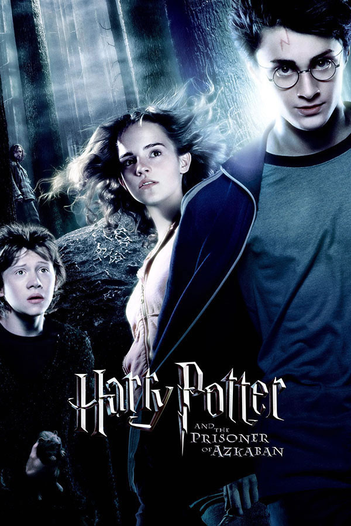
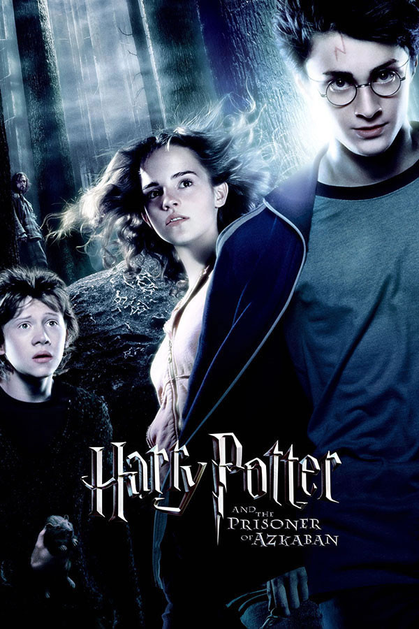
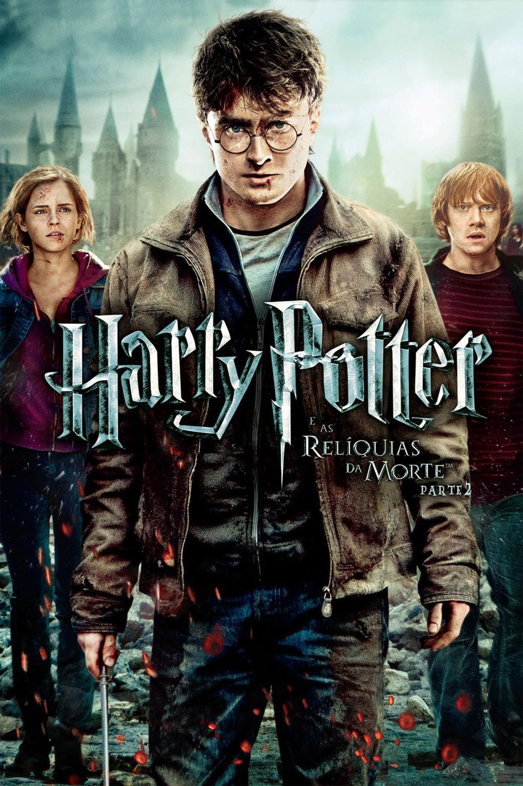
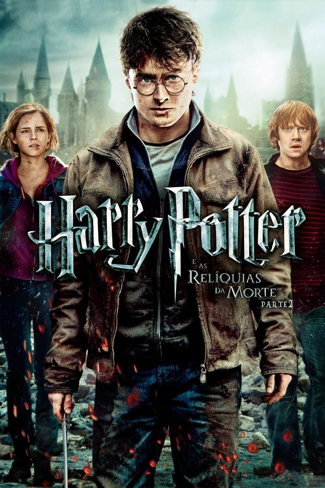

Sobre
Harry Potter é uma série de sete romances de fantasia escrita pela autora britânica J. K. Rowling. A série narra as aventuras de um jovem chamado Harry James Potter, que descobre aos 11 anos de idade que é um bruxo ao ser convidado para estudar na Escola de Magia e Bruxaria de Hogwarts. O arco de história principal diz respeito às amizades de Harry com outros bruxos de sua idade, como Ronald Weasley e Hermione Granger, e também com o diretor de Hogwarts Albus Dumbledore, considerado o maior dos magos, e seus conflitos com o bruxo das trevas Lord Voldemort, que pretende se tornar imortal, conquistar o mundo dos bruxos, subjugar as pessoas não-mágicas e destruir todos aqueles que estão em seu caminho, especialmente Harry Potter, a quem ele considera seu maior rival.
 


 
